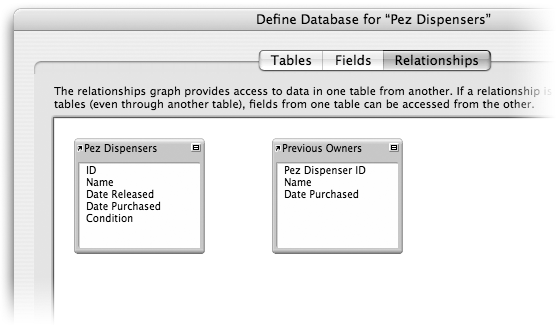
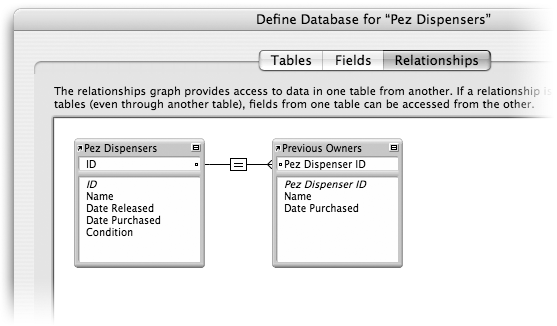
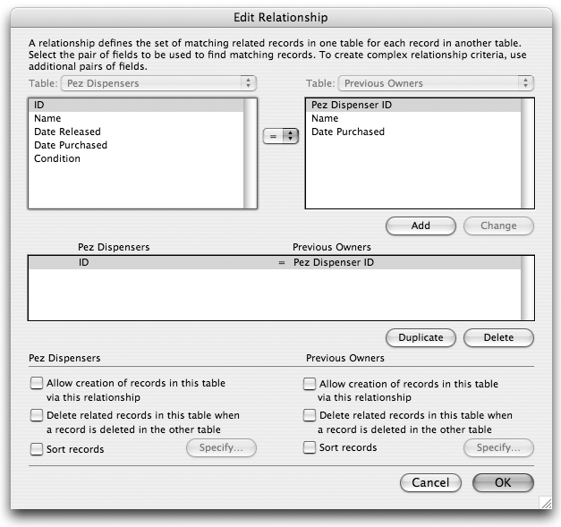
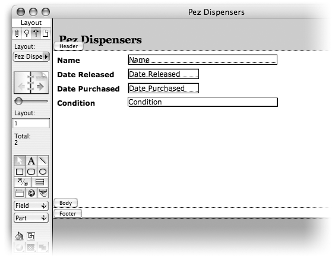
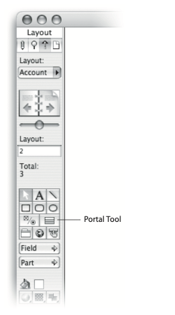
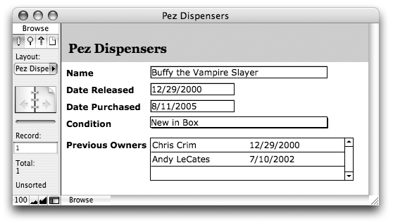

This post is archived from the now-defunct FileMaker Advisor magazine. Some posts have been edited slightly to fix typographical errors, and remove unnecessarily-gendered language. You can view the full archive here.
Relationships hold a special place in the world of a database designer: They’re simultaneously your most powerful tool and the most difficult to figure out. If your first trip to FileMaker’s Relationships tab left you scratching your head, you’re not alone. FileMaker goes a long way towards making relationships easy to set up, manage, and use. But the real trick is understanding the concepts behind relationship building. In this article, you’ll learn how to add a sprinkling of relational capability to your own FileMaker database.
You already know that FileMaker is a first-class choice for managing information about the things you deal with every day. Maybe you have a database of all your customers, or the subscribers to your Mineral Water Monthly news letter, or all the vintage Pez dispensers you have up for sale on eBay. Whatever it is you’re keeping track of, you add fields to hold the individual bits of information (these bits of information are usually called “attributes”). Since every customer or subscriber has a First Name, your database probably has a First Name field. And those Pez dispensers each have a Date Purchased, a Condition, and a Picture.
But what happens when a particular attribute can have several different values at the same time? Customers might have more than one address, for instance. Or suppose you wanted to keep track of previous owners on each of your Pez dispensers. Now you’re asking a FileMaker field to do double (or triple or quadruple) duty. There are a lot of ways to pull this off in FileMaker, namely:
1: You could just put several things in one field, perhaps with a comma between each one. This is a certifiably terrible idea though. First, how do you handle something like an address, which is spread across several fields? Also, all those commas can be a nuisance to keep track of, and if someone forgets one, it can quickly become confusing interpreting your data. What good is storing all this data if you can’t figure it out later? This method should be reserved for only the very simplest situations, and even then you should think twice.
2: You could define several fields with similar names. For example, you might have Previous Owner 1, Previous Owner 2, and Previous Owner 3. This is the method most new users jump to first, because it is a relatively obvious solution. Although it isn’t a bad approach, it isn’t a very good one either. Before long, you’ll end up with so many fields you won’t know what to do with yourself. Besides, this approach requires that you know up front how many fields to create. How many previous owners will a Pez dispenser have? Maybe just one or two. But what if someday you get one with five? You’ll have to revisit your field definitions and make changes to your layouts to make room for more.
3: You could use a repeating field. When you define a field, you can click the Options button in the Define Database dialog box. From there, under the Storage tab, you’ll find a box where you can enter a “Maximum number of repetitions.” If you give a field four repetitions, FileMaker will show you four copies of that field on the layout, and you can put something in each one. Repeating fields can seem like an elegant solution to this problem, but they’re not perfect. Although they keep your field count from getting out of hand, they don’t solve any of the other problems with #2 above. More importantly, they’re hard to search, print, export, or summarize. And repeating fields have another big disadvantage: they make you look like a FileMaker Newbie—every experienced FileMaker developer knows repeating fields are a no-no.
It turns out the best way to get your multiple-values fix is to use a related table. In the Pez dispensers example, you would add a second table to your database whose whole job is keep tabs on the previous owners of your treasures. You then instruct FileMaker how to tell which owners go with each dispenser and you’re done. This is all easier said than done, so here’s how you do it:
Creating a Relationship
Suppose you have a file called “Pez Dispensers” with one table and fields with these names and types (if you’re not sure what the ID field is all about, see Always Carry Identification):
ID (Number)
Name (Text)
Date Released (Date)
Date Purchased (Date)
Condition (Text)
Now you want to add the concept of previous owners. Each previous owner has a Name and its own Date Purchased. Your first task is to add a new table to your database:
Choose File → Define Database and switch to the Tables tab.
FileMaker shows you the one-and-only table in your database. You’re about to add another one.
In the Table Name box, enter “Previous Owners” then click Create.
The new table is added to the list. Although you have a table, it isn’t very useful yet because it has no fields.
Switch to the Fields tab, and make sure Previous Owners is selected in the Table pop-up menu at the to of this window.
You see a barren field list, waiting for you to sew the seeds of data.
Add a Number field called Pez Dispenser ID.
This field will hold the ID of the pez dispenser that this owner is attached to. For clarification, see Always Carry Identification.
Add a Text field called Name and a Date field called Date Purchased.
Now you’ve finished your table. Each record in this table can hold exactly one previous owner.
By now you already know which owners go with which dispensers. Each previous owner has the ID of his pez dispenser in the Pez Dispenser ID field. Unfortunately, FileMaker isn’t nearly as clever as you are, so you’ll have to explain this simple concept to it. This is the Relationship part. You tell FileMaker how these two tables go together by defining a relationship between them. In this case, you’ll tell it that the ID field in the Pez Dispenser table is supposed to match the Pez Dispenser ID field in the Previous Owners table.
Switch to the Relationship tab in the Define Database dialog.
You see two odd rectangles (Figure 1) that are named after your tables. These little buddies are Table Occurrences and they make up your Relationship Graph. It is your job to add the relationships to this graph.

Figure 1
Figure 1: FileMaker’s Relationships tab shows how the tables in your database fit together. Right now you have two tables, but no relationships, so these table occurrences are completely unattached.
Click on the ID field in the box labeled Pez Dispensers and, with the mouse button held down, drag over the Pez Dispenser ID field in the Previous Owners box.
As you drag, a line follows your mouse arrow. When you release the button, the line stays behind (Figure 2) connecting the two boxes.

Figure 2
Figure 2: Now the two table occurrences are connected by a thin black line. This line represents a relationship. You can tell at a glance that these two tables are related to one another by the two ID fields.
If you accidentally connect the wrong fields, just click the [=] on the line between the table occurrences and press the Delete or Backspace key on your keyboard. Then try again.
Now you have two tables and one relationship. Technically, you can stop right here and tell all your friends you’re now a relational database developer. But chances are you’re still wondering what in the world you can do with this relationship. Well, lots. First of all, what happens if you delete a Pez Dispenser from your database (maybe your dog swallowed it, changing its condition from “Like New” to “Severe Cosmetic Defects” and you’ve decided you simply don’t want it anymore). If you delete the record, what happens to the related Previous Owner records? Well, left to its own devices, FileMaker will gladly leave them there as what a seasoned database pro would call “orphans:” related records (Previous Owners) that no longer have a necessary parent record (Pez Dispenser). FileMaker simply can’t know which records you consider to be the parents, or primary records, and which are thus the child records—the records that shouldn’t exist without a parent.
Luckily, you can tell FileMaker more about a relationship so it knows what to do in a situation like this. To edit the relationship you just defined, double-click the big [=] box in the middle of its line. You can also click the box once, then click the pencil button under Tables/Relationships at the bottom of the window. Either way, you’ll see the Edit Relationship dialog box, which is also pictured in Figure 3.

Figure 3
Figure 3: Although creating a relationship is a drag-and-drop affair, to access the more advanced relationship settings you need to visit the Edit Relationship dialog box.
For now, focus your attention on the bottom third of the dialog box, where you see two sets of three checkboxes. Above each set, FileMaker tells you which table the settings apply to. In this case, the Pez Dispenser table is on the left and the Previous Owners is on the right. The only options you should be concerned with right now is “Delete related records in this table when a record is deleted in the other table” and “Allow creation of records in this table via this relationships.” Turn on both these options and FileMaker will treat these as a true parent-child relationship. You’ll be able to make new Previous Owner records right from the Pez Dispenser layout, and when you delete a pez dispenser record, the related previous owners will automatically be deleted as well.
With your relationship fully defined, you can click “OK” a couple of times to close the various dialog boxes on your screen and return to your database window. If you check the Layout pop-up menu in the status area, you’ll see that FileMaker has created a Previous Owners layout for you. Since you’ll be managing previous owners from the main Pez Dispenser layout, you can delete this new layout if you want.
Using Related Data on Layouts
Figure 4 shows a (very simple) Pez Dispenser layout. Right now it doesn’t show or allow the user to edit the previous owner information. Luckily, using related data in FileMaker is a breeze.

Figure 4
Figure 4: This is how a Pez Dispenser layout might look before you tell it about Previous Owners. To take advantage of the new table and relationship you just created, you can add a portal. Portals show scrolling lists of related records on a parent record’s layout.
If you add a field to this layout now, you’ll discover that FileMaker shows Previous Owners in the pop-up menu at the top of the field list. With no fanfare at all, you’re free to drop any of the fields from the related table right on this layout, where they’ll work just like ordinary fields. For example, if you add the Name field from the Previous Owner table occurrence to the layout, FileMaker will show you the name of the first related Previous Owner when you view the layout in browse mode. You can change the name directly (assuming the field is enterable) and even use it in searches and sorts, just like fields from the Pez Dispenser table.
But the whole point of this exercise was to support multiple Previous Owners for one Pez Dispenser. So seeing and editing the first is probably not what you had in mind. To display data from several related records at once, you use something called a “portal.”
Select the Portal tool in the Status area (make sure you’re in layout mode first).
Figure 5 shows you the oft-overlooked Portal Tool.

Figure 5
Figure 5: The portal tool lives with all the other tools in the Status area when you’re in Layout mode. Just click it once and you’ll be able to “draw” a portal on the layout.
Click and drag a rectangle somewhere in the open space on your layout.
FileMaker shows a dotted rectangle as you drag. When you release the mouse button, the Portal Setup dialog box appears.
In the “Show related records from” pop-up menu, choose Previous Owners.
This tells FileMaker which table to get the portal’s data from. It will automatically decide which records to show based on the relationship you defined to that table.
Turn on “Allow deletion of portal records” and “Show vertical scroll bar.”
Portals have a handfull of settings, which you’re free to explore. In this case, you have told FileMaker that you want to be able to delete Previous Owner records right from this layout. You’ve also elected to allow FileMaker to show a scroll bar if the number of related records doesn’t fit in the space you give the portal.
Click OK.
FileMaker now asks which fields you want to include on the portal. You can always add or remove fields later simply by dragging them around in layout mode.
Move Name and Date Purchased to the Included Fields list, then click OK.
You are now back on the layout, and your new portal is ready to use. You may want to add a label to your portal by copying one of the field labels and changing its name.
Figure 6 shows the new-and-improved layout. You can type directly into the fields in the portal to edit them. Whenever you enter in a row, a new blank row appears below it, ready for more. If you are in a portal field when you choose the Records → Delete Record command, FileMaker will ask you if you want to delete the Master (Pez Dispenser) or Related (Previous Owner) record, so if you add an owner you don’t really want, you can easily delete it.

Figure 6
Figure 6: This version of the layout has the portal in place and ready to use. Working with a portal is intuitive and easy for anyone who is familiar with editing records in FileMaker.
With some relationship power and a little portal lovin’, your improved database can hold—and display—an unlimited number of previous owners with no dirty tricks and only a few new fields. This is just a small sample of what you can do with relationships, but it is a start. Using the same techniques outlined here, you can create databases with several tables all connected and acting as one larger system.